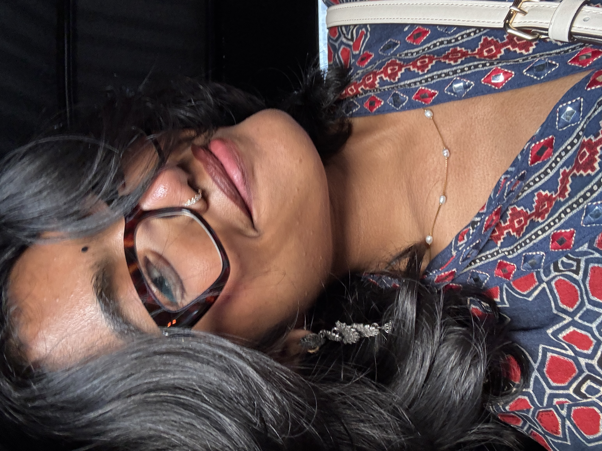

I'm a Technical Designer based in New York City. I graduated from the Fashion Institute of Technology with a passion for bridging the gap between creative vision and technical precision. At 22, I bring garments to life from concept to construction — with a sharp eye for detail, a deep love for fashion, and a commitment to craft that shows in every flat sketch and finished piece.
Designed in New York
Every project in this portfolio is a reflection of the energy, grit, and creativity that New York City inspires. Shaped by a rigorous education at FIT and the relentless pace of the fashion capital of the world, Ayrin's work spans technical illustration, draping, garment construction, and collection development — driven by the belief that great design is both felt and engineered.
Shop My_